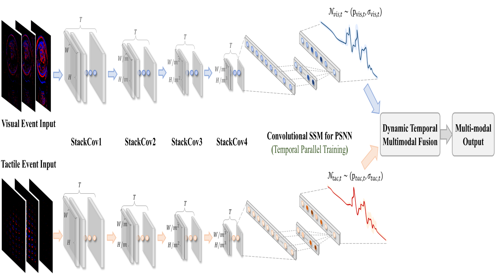
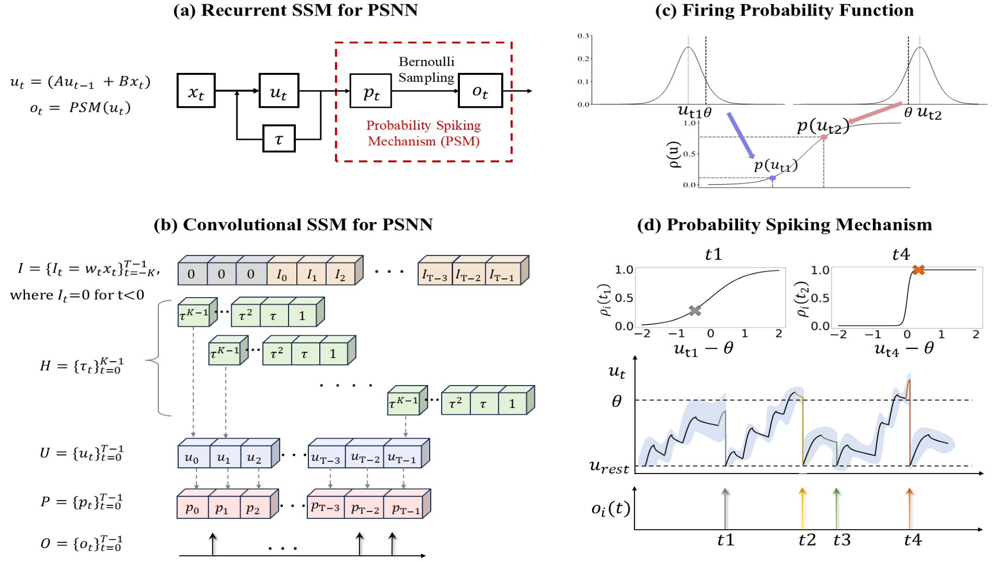
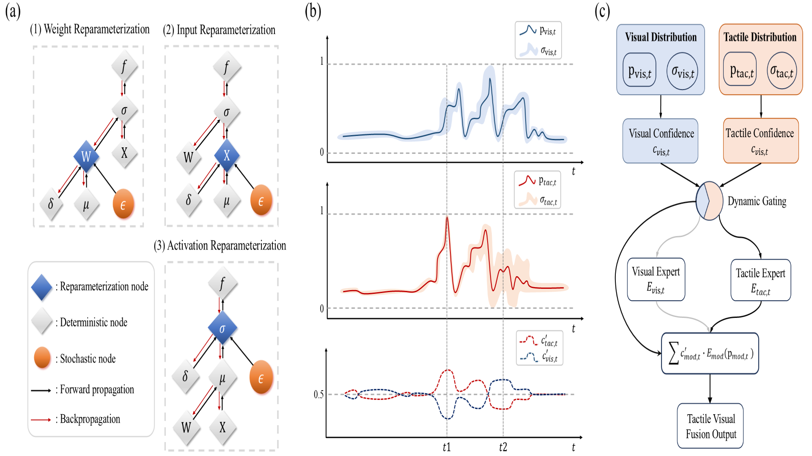
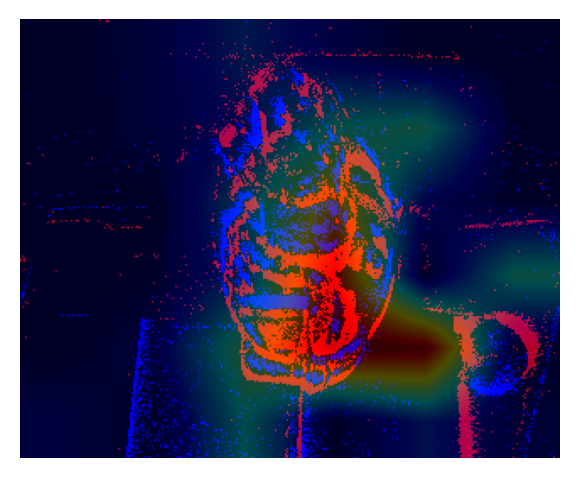
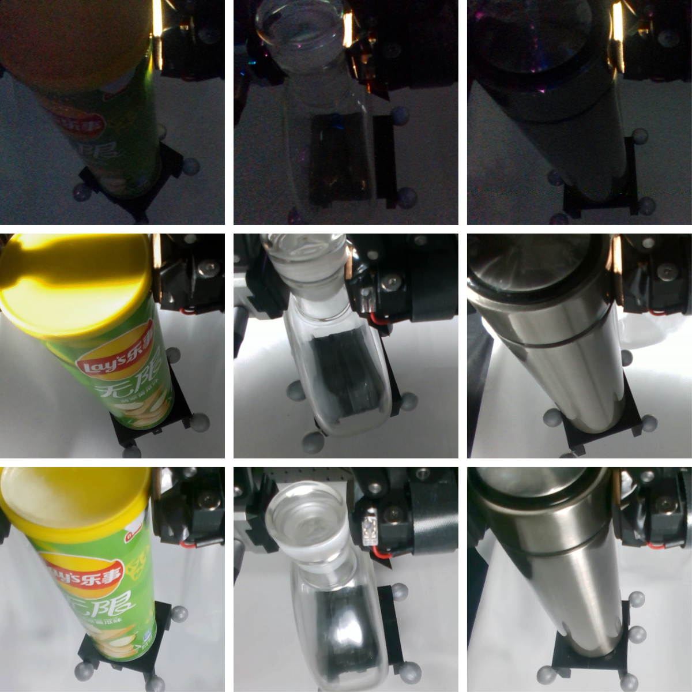
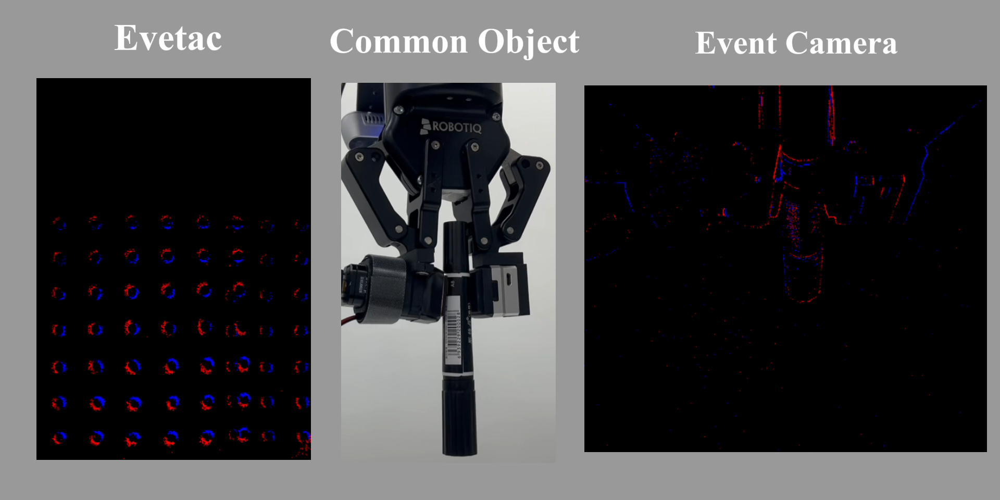
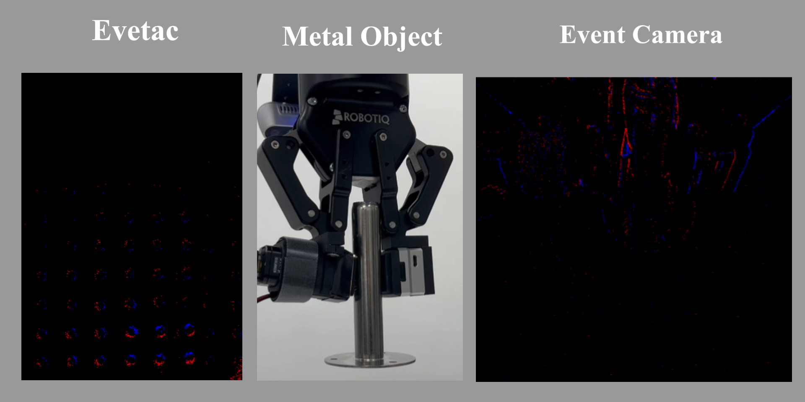
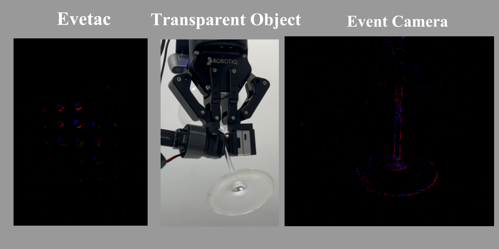

IEEE Transactions on Robotics, 2026
PS3N for Event-Based Visual-Tactile Slip Detection
A recent T-RO publication on fast, uncertainty-aware robotic slip detection using event cameras, event-based tactile sensing, probabilistic spiking state-space models, and dynamic multimodal fusion.
Real robotic manipulation with event-based visual-tactile slip detection.
Research problem
Slip is fast, local, and easy to miss.
Robotic grasping needs early slip detection before an object is dropped. Event cameras and event-based tactile sensors are well suited to this setting because they capture sparse, high-temporal-resolution changes instead of waiting for dense video frames.
Hard objects
Transparent, reflective, and low-texture objects stress conventional visual pipelines.
Early response
Slip detection must be close to the onset of motion so a controller can still react.
Long sequences
Classic recurrent SNN training can be slow when event streams become long.
Method
Probabilistic spiking dynamics as a structured state-space model.
PS3N
Reformulates probabilistic spiking dynamics into linear time-invariant state-space equations, enabling a convolutional form for parallel training.
Local decaying kernels
Preserves temporal precision while scaling efficiently over long event sequences.
DTMF fusion
Dynamically weights visual and tactile modalities using time-varying uncertainty estimates.




EVTS dataset
A real-world benchmark for visual-tactile slip.
EVTS synchronizes a wrist-mounted event camera and the Evetac optical tactile sensor during robotic manipulation, covering diverse materials, lighting, and motion patterns.




Results
Efficient training, robust multimodal performance.
PS3N outperforms standard baselines across object categories and sensing modalities.
The model trains more than 28 times faster than recurrent SNN-based baselines.
DTMF improves multimodal recognition by letting more reliable modalities contribute more over time.
Demos
Robotic slip and disturbance examples.
Short clips from the project materials show fast pull-out, slow-motion analysis, and external disturbances.
Fast pull-out
Rapid object removal creates a high-speed slip event.
Slow-motion pull-out
Five-times slower playback for inspecting timing.
Foam disturbance
External contact tests robustness under soft disturbance.
Paper disturbance
A light disturbance case for event-based sensing behavior.
Publication
PS3N: Probabilistic Spiking Structured State-Space Networks for Event-Based Visual-Tactile Slip Detection
Senlin Fang, Yilin Li, Peng Wu, Yiru Wang, Shu Zhang, Zihan Wang, Bozhan Cao, Hoiio Kong, and Zhengkun Yi. IEEE Transactions on Robotics, vol. 42, 2026.